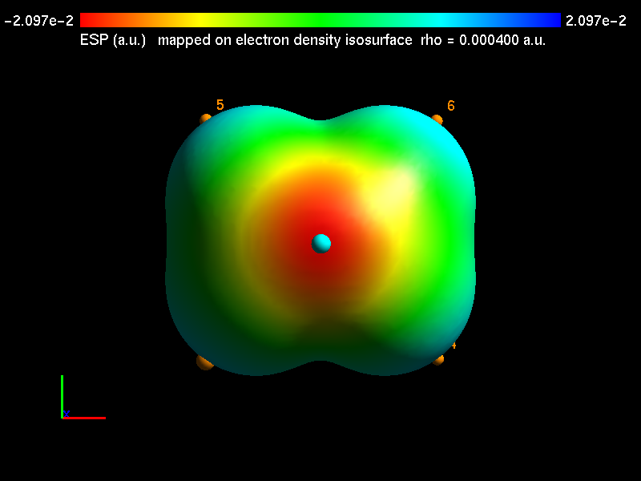
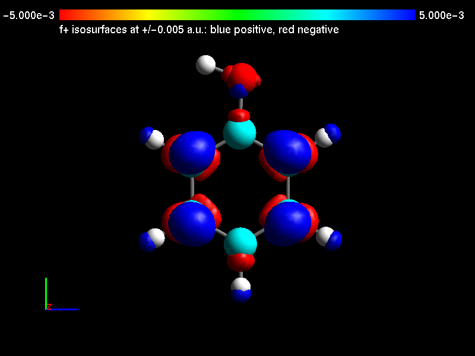

gqteaWinToga
A Windows toolkit for preparing, visualizing and analyzing molecular simulations.
Build inputs for CPMD, Quantum ESPRESSO cp.x, ORCA and surface hopping runs, then turn the trajectories they produce into bond distributions, radial distribution functions, residence times, power spectra and rate constants. From Gaussian wavefunctions, map the electrostatic potential onto molecular surfaces and find the reactive sites of a molecule with Fukui functions, all from one window.
What's inside
The program's main window groups its tools into five tabs. Each tool opens its own window: choose your files, enter the parameters, and run.
Measure geometry along a trajectory, usually a CPMD TRAJEC.xyz, and get averages, distributions and free-energy profiles.
- Bond length analysis
- All bond distances at once, solute only or the whole system
- Bond angle and all bond angles
- Dihedral angle and all dihedral angles
- Hydrogen bond analysis
- Comparison of geometric parameters between two runs, for example isolated versus solvated, with MAE and RMSD
Generate input decks from an XYZ geometry, ready to edit and run in the simulation program.
- CPMD inputs for wavefunction optimization, equilibration and production runs
- Surface hopping input builder
- Molecular collision setup
- Quantum ESPRESSO
cp.xinput builder - ORCA input builder
- gqteaMD input builder
- Gaussian 16 Fukui input builder: the N, N+1 and N−1 calculations in one linked job, plus a
formchkscript (new) - Vanderbilt
runatom.xinput builder
Analyze solvation structure and dynamics, and build the boxes to simulate them in.
- Radial distribution function
- Mean residence time, with the legacy workflow still available
- Velocity autocorrelation function and power spectrum
- Single-solute solvent box
- Mixture of two solvents
- Shared-wall double solvent box
- For all three boxes: faster packing, an optional periodic pre-optimization that removes close contacts, the system's charge, electron count and spin multiplicity, and a live view of the box as it is built
Kinetics from simulation data.
- Classical rate constant
Visualization, plotting and the many small conversions a simulation project needs.
- 3D molecular viewer with trajectory playback and measurements
- Electrostatic surface potential (ESP) from Gaussian
.fchkfiles: colour-mapped surfaces and their maxima and minima, exported as images (more) - Analysis of Fukui functions: f+, f−, f0 and the dual descriptor in 3D, with global and atom-condensed reactivity indices (new)
- Molecular design: sketch a molecule, pre-optimize it and send it to the viewer
- Plots: CPMD and gqteaMD energy files, multi-column data, grouped bar charts of tables with text labels such as atom symbols (new), and saved figures reopened from their JSON files
- Molecular axis alignment
- Frame selection, including by interatomic distance range
- Surface hopping geometry analyzer: separate frames by electronic state
- CPMD input to XYZ, and
cp.x.postotrajec.xyz - Forces from
cp.x.forfiles - Coordinate converter (file formats, Ångström ↔ Bohr) and unit converter
Since version 0.7.5
Electrostatic potential on molecular surfaces
Open a Gaussian formatted checkpoint (.fchk or .fch, made with formchk). The tool builds one or more electron-density isosurfaces, computes the electrostatic potential exactly at every surface point, and finds its maxima and minima the way Multiwfn does. The result is drawn the way GaussView draws a mapped ESP: red where the potential is negative, blue where it is positive.
- Two quantities, kept apart. The surface is set by the electron density (default isovalue 0.0004 a.u.; several isovalues per run); the potential is what is mapped onto it, in a.u. or kcal/mol.
- Exact potential. Analytic integrals over the Gaussian basis set (s to g functions, closed or open shell), matching Gaussian’s own
cubegento better than 10−6 a.u. Ifcubegenis installed, it can be used instead. - Surface extrema saved. Every global and local maximum and minimum, with its value in a.u. and kcal/mol, its position in Å, the nearest atom and the isovalue of its surface, goes to
<name>_ESP_extrema.txt. - Fast. A small molecule takes a second or two; the optional
numbapackage makes larger ones about five times faster. - Ready for a paper. Choose a black, white or grey background and export the 3D view as a PNG image.

New in version 0.8.0
Fukui functions: where a molecule reacts
Give the tool three Gaussian .fchk files of one molecule at one geometry: the neutral molecule (N electrons), its anion (N+1) and its cation (N−1). It computes the Fukui functions from the three electron densities and shows where an added electron goes and where a removed one comes from. In other words, it shows which atoms favour nucleophilic, electrophilic or radical attack.
- All the conceptual-DFT descriptors. f+, f−, f0 and the dual descriptor on a 3D grid, saved as cube files; the global indices (ionization potential, electron affinity, electronegativity, hardness, softness, electrophilicity and nucleophilicity); and the same functions condensed to each atom.
- No external program needed. The atom-condensed indices come from built-in Hirshfeld charges for elements H to Ar. They agree with Multiwfn to within 3×10−4, and the 3D functions agree with Multiwfn’s cube files to within 10−5 a.u.
- Seen in 3D. Show each function as positive and negative isosurfaces, or mapped in colour on the molecule’s density surface with its maxima and minima. Atoms can be drawn as lines, balls and sticks, or space-filling spheres, with or without their numbers.
- Checked before computing. The tool refuses files with different atoms, geometries, basis sets or methods, and it says why. Phenol takes about eight seconds; the optional
numbapackage makes the density grid about four times faster.
Prepare the three calculations
The new Gaussian Fukui Input Builder (Inputs tab) writes one Gaussian 16 input with three linked jobs: it optimizes the neutral molecule, then runs the anion and the cation as single points at exactly that geometry. It also writes a formchk script that converts the checkpoint files into .fchk files. You must enter the spin multiplicity of every state, because the builder never guesses one. When you then pick the neutral molecule’s file in the analysis tool, the anion and cation files are filled in for you. The input builder is in the source code now and will be in the next installer release.
How to use it · How to read the figure · The equations and methods

Install
-
Download the installer
Use the download button above. You get a zip file named like
gqteaWinToga-v0.8.0-INSTALLER.zip. -
Extract it
Right-click the zip, choose Extract All, and open the extracted folder.
-
Run the installer
Double-click
gqteaWinToga-…-INSTALLER.exe. It installs for your user account, so administrator rights are not needed. If Windows shows “Windows protected your PC”, choose More info, then Run anyway. The warning appears because the program isn't signed with a commercial certificate. -
Start the program
Open gqteaWinToga from the Start menu, or from the desktop shortcut if you chose to create one.
Learn to use it
The user manual describes every tool, its input files and outputs, with worked examples such as finding a bond-length free-energy minimum, preparing a CPMD collision restart, grouping surface hopping frames by electronic state, locating the electrostatic potential minima of a molecule and reading a Fukui function figure of phenol.
Found a bug or have a request? Open an issue on GitHub.
Who makes it
gqteaWinToga is developed by the Grupo de Química Teórica e Estrutural de Anápolis (gQTEA) at the State University of Goiás (UEG), Brazil, for research and graduate teaching in computational chemistry.
- Ademir J. Camargo
- Valter H. C. Silva
- Solemar S. Oliveira
- Hamilton B. Napolitano
- Luciano Ribeiro
- Flavio O. Sanches
Contact: ajc@ueg.br